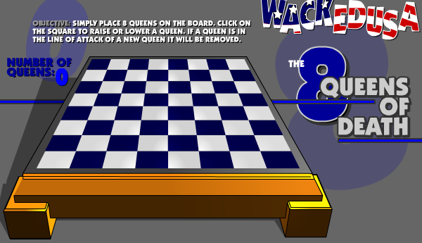
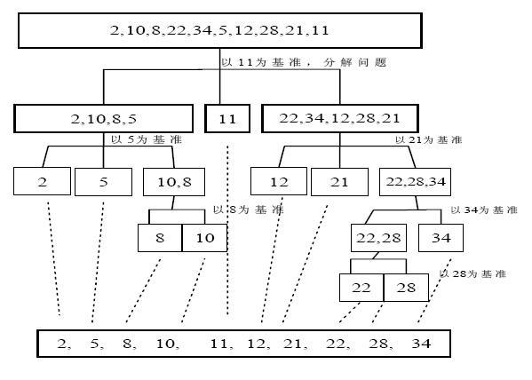
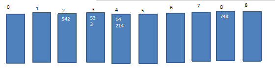
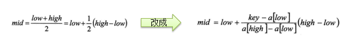
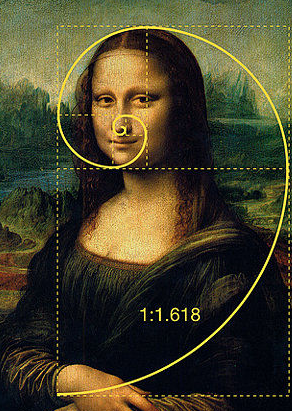

本文是通过观看尚硅谷的数据结构和算法视频的笔记，如有错误地方，欢迎指正。
代码部分使用的语言是C++
稀疏数组
1. 使用情况：
当一个数组中的大部分元素为 0 或者同一值时，可采用稀疏数组进行压缩。
2. 操作方法：
（1）先记录数组中一共有多少行、多少列和多少个不同的值；
（2）将不同值的元素的行数、列数和值用一个小数组记录；
（3）小数组，即稀疏数组行数随原数组的值进行变化，列数共三列，分别表示行、列、对应的值；
（4）如果原数组共有 n 个不同的值，则小数组的行数为 n+1，因为小数组的第一行存储总的行数、列数和不同值个数，第二行开始记录每个在原数组不同值对应的行和列；
（5）将稀疏数组保存到磁盘中；
3. 代码部分
- 稀疏数组实现代码
栈（stack）
1.特点
（1）先入后出的有序列表
（2）栈底固定不变，栈顶随着数据输入输出而变化
（3）入栈图
- 
（4）出栈图
- 
2.使用场景
（1）子程序的调用：在跳往子程序前，会先将下个指令的地址存到堆栈中，直到子程序执行完后再将地址取出，以回到原来的程序中。
（2）处理递归调用：除了储存下一个指令的地址外，也将参数、区域变量等数据存入堆栈中。
（3）表达式的转换
（4）二叉树的遍历
（5）图形的深度优先搜索法（dfs）
3. 表达式
（1）前缀表达式（波兰表达式）
- 特点：运算符均位于操作数之前。
- 例如：- × + 3 4 5 6
- 求值过程：从右向左扫描表达式，遇到数字，压入数字栈，遇到运算符，弹出栈顶两个数字进行运算，将结果压入数字栈；重复操作。
（2）中缀表达式
- 即常见的运算表达式
- 例如：(3+4)×5-6
（3）后缀表达式（逆波兰表达式）
- 特点：运算符位于操作数之后
- 例如：3 4 + 5 × 6 –
| 正常表达式 | 逆波兰表达式 |
|---|---|
| a+b | a b + |
| a+(b-c) | a b c - + |
| a+(b-c)*d | a b c – d * + |
- 求值过程：从左至右扫描表达式，遇到数字，压入数字栈，遇到运算符，弹出栈顶的两个数字，计算结果，并将结果入栈；重复上述过程直到表达式最右端，最后运算得出的值即为表达式的结果；
- 【逆波兰计算器】中缀表达式转后缀表达式
队列（queue）
1. 特点
（1）先入先出的有序列表
（2）可以用数组或链表实现
（3）队列的顶端、低端下标随着数据输入、输出而变化
- 
2. 模拟队列代码
链表
1.特点
（1）以节点的方式进行存储，属于链式存储
（2）每个节点含有 data 域和 next 域，next 用于指向下一个节点
2.单链表
（1）带头节点链表示意图
- 
（2）单链表代码
- 【面试题】查找单链表中的倒数第k个结点
- 【面试题】单链表的反转
3.单向环形链表
（1）约瑟夫环问题（Josephu）
问题描述：
设编号为1，2，．．．n的n个人围坐一圈，约定编号为k（1<=k<=n）的人从1开始报数，数到m 的那个人出列，它的下一位又从1开始报数，数到m的那个人又出列，依次类推，直到所有人出列为止，由此产生一个出队编号的序列。
- 
- 约瑟夫环代码
4.双向链表
（1）不需要辅助节点就可以实现自我删除
（2）用双向链表实现单向链表
- 双向链表代码
递归
1.解决问题：
（1）数学问题如：八皇后，汉诺塔，阶乘，迷宫，球和篮子等；
（2）各种算法：快速排序，二分查找，分治算法等；
（3）将用栈解决的问题变成用递归，使代码简洁。
2.注意事项
（1）每次执行一个方法时，就创建一个新的受保护的独立空间(栈空间)；
（2）归必须向退出递归的条件逼近，否则就是无限递归；
（3）当一个方法执行完毕，或者遇到return，就会返回，遵守：谁调用，就将结果返回给谁，同时当方法执行完毕或者返回时，该方法也就执行完毕。
3.走迷宫问题
（1）示意图如下
- 
（2）【递归】走迷宫，求最短路径
4.八皇后问题
（1）示意图如下
- 
（2）【递归】八皇后问题（回溯算法）
排序算法
1.内部排序
（1）特点：将需要处理的所有数据都加载到内部存储器中进行排序。
（2）冒泡排序
- 基本思想：对待排序序列从前向后，依次比较相邻元素的值，若发现不符合条件则交换，使值大/小的元素逐渐从前移向后部，就像水底下的气泡一样逐渐向上冒出。
- 优化：在排序过程中设置一个标志flag，判断元素是否进行过交换，如果一趟比较下来没有进行过交换，就说明序列是有序的，减少时间。
（3）选择排序
- 基本思想：每次从未排序区间中选择出一个最小/大的数与未排序区间的第一个位置进行交换，重复上述过程。
- 
（4）插入排序
- 基本思想：把n个待排序的元素看成为一个有序表和一个无序表，开始时有序表中只包含一个元素，无序表中包含有n-1个元素，排序过程中每次从无序表中取出第一个元素，把它的排序码依次与有序表元素的排序码进行比较，将它插入到有序表中的适当位置，使之成为新的有序表。
- 
（5）希尔排序（插入改进版）
- 基本思想：记录按下标的一定增量分组，对每组使用直接插入排序算法排序；随着增量逐渐减少，每组包含的关键词越来越多，当增量减至1时，整个文件恰被分成一组，算法便终止；
- 
- 【希尔排序】使用交换法
- 【希尔排序】使用移动法
（6）快速排序（冒泡改进版本）
- 基本思想：通过一趟排序将要排序的数据分割成独立的两部分，其中一部分的所有数据都比另外一部分的所有数据都要小，然后再按此方法对这两部分数据分别进行快速排序，整个排序过程可以递归进行，以此达到整个数据变成有序序列；
- 
- 【快速排序】代码部分
（7）归并排序
- 基本思想：采用分治策略
- 
- 【归并排序】采用分治，代码实现
（8）基数排序（桶排序扩展）
- 基本思想：将所有待比较数值统一为同样的数位长度，数位较短的数前面补零。然后从最低位开始，依次进行一次排序。这样从最低位排序一直到最高位排序完成以后, 数列就变成一个有序序列。
- 是稳定性排序，即不改变元素的相对位置，需要借助二维数组，属于空间换时间
- 
- 【基数排序】代码实现
2.外部排序
使用情况：数据量过大，需要借助外部存储
3.常用排序复杂度对比

查找算法
1.线性查找：逐一对比
2.二分查找：前提数组有序
3.插值查找
（1）mid 是自适应的，即根据需要查找的值和左右边界而确定mid（公式）
- 
- 【插值查找】代码实现
（2）适应情况：数据量大，值分布均匀
4.黄金分割法（斐波拉契查找法）
（1）黄金分割值：0.618
- 
（2）mid是位于黄金分割点附近，即 mid=low+F(k-1)-1
递归/非递归